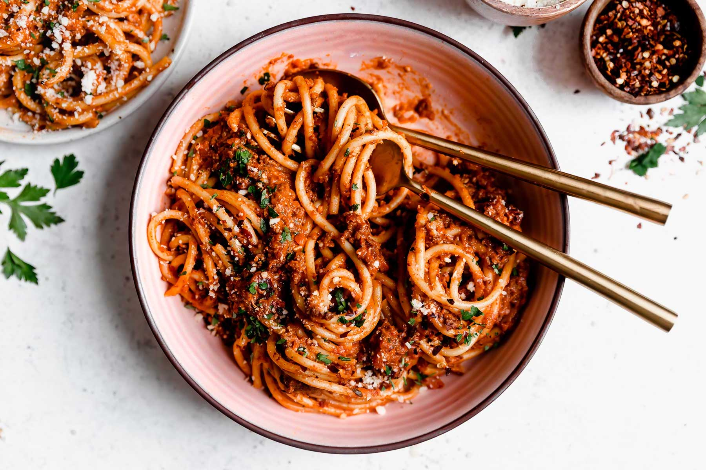

Spaghetti Bolognese

Description
SPAGHETTI! BOLOGNESE! *chef's kiss*
Ingredients
- 2 large carrots roughly chopped
- 1 stalk celery roughly chopped
- 1 large yellow onion roughly chopped
- 120g pancetta or lardons roughly chopped
- 6 cloves garlic
- salt & black pepper to season
- 2 T olive oil
- 500g ground beef
- 500g ground pork
- 170g tomato paste
- 1 c red wine
- 4 sprigs rosemary
- 12 sprigs thyme
- 2 bay leaves
- 1 parmesan rind
- 800g can crushed tomatoes
- 2 c chicken stock
- 1/2 c heavy cream
- 1/2 c grated parmesan
- 500g past of choice preferably bucatini, spaghetti, or rigatoni
- for serving: grated parmesan or pecorino; chopped basil or parsley; crushed red chilli flakes
Method
- Soffritto: Add the roughly chopped carrot, celery & onion to the bowl of a food processor. Pulse just until the mixture is broken down into fine pieces. The mixture should not be puréed; you should still be able to see small pieces of carrot, celery & onion. Transfer to a medium bowl & set aside.
- Pestata: Add the pancetta & garlic to the bowl of the same food processor used to make the soffritto (no need to wash it!). Pulse just until the mixture is broken down into fine pieces. Set aside.
- Cook the pestata: Add the olive oil to a heavy-bottomed pot (at least 4-quart capacity) over medium heat. Once hot, carefully add the pestata mixture from Step 1 and cook, stirring occasionally, until the pancetta renders, 4-5 minutes.
- Brown the soffritto: Add the soffritto mixture from Step 1 to the pot with the pestata. Season with 1 teaspoon kosher salt, and stir to combine. Cook, stirring ocassionally, until deeply browned & fragrant, 15-20 minutes. If the veggies begin to brown too quickly, reduce the heat to medium-low or low. Once browned, push the pestata & soffritto mixture to the outer edges of the pot.
- Brown the meat: Generously season the beef and pork with 1 teaspoon kosher salt each. Add the meat to the center of the pot with the soffritto & pestata mixture. Do not touch the meat for 2-3 minutes, allowing it to brown deeply. Turn the meat over and brown the second side for 2-3 minutes. Once browned on both sides, use a wooden spoon to break the meat apart into small pieces. Stir to combine with the soffritto mixture. Cook, stirring occasionally, until browned completely, 8-10 minutes. Add the tomato paste, stirring to coat the meat & soffritto mixture. Cook for 2-3 minutes to brown.
- Deglaze: Increasing the heat to medium-high, pour the red wine into the pot. Stir constantly, using a wooden spoon to scrape up any browned bits that may have formed at the bottom of the pot. Cook for 4-5 minutes, until the wine is almost completely absorbed into the meat mixture.
- Aromatics: Tie the herbs together using kitchen twine (or finely chop if you do not have twine), then add to the pot with the bay leaves & parmesan rind, if using. Add the crushed tomatoes & broth or water, stirring to combine.
- Simmer: Reduce the heat to medium-low and simmer, stirring occasionally, for 90 minutes. If the bolognese begins to reduce too much (losing too much of its liquid too quickly), feel free to add in a splash more broth/water, reduce the heat further, &/or cover the pot.
- Finish the bolognese sauce: Stir in the heavy cream and grated parmesan. Taste and season with additional kosher salt and ground black pepper, as desired. At this point you can cool & store for later use (see Recipe Notes for storage & freezing directions), or serve immediately with pasta (proceed to Steps below).
- Cook the pasta: Once the bolognese has simmered & reduced (Steps 7-8, above), cook the pasta. Bring a large pot of salted water to a boil. Add the pasta and cook, stirring occasionally, until the pasta is cooked to al dente. Carefully dip a liquid measuring cup into the pot, reserving about 1 cup of the starchy pasta water, and set aside. Carefully drain the pasta – do NOT rinse it!
- Finish the pasta bolognese: Add the pasta straight to the bolognese sauce. Toss to combine well – the sauce should evenly coat the pasta. Add in some of the reserved pasta water if the bolognese sauce needs to loosen up a little; add in an extra handful of parmesan if the sauce needs to tighten up a little. Cook over medium heat for 1-2 minutes, allowing the pasta to meld with & absorb some of the sauce.
- Serve the pasta bolognese: Portion out the pasta bolognese into individual pasta bowls. Serve immediately, topped with extra parmesan, chopped herbs, &/or a sprinkling of crushed red pepper as desired. Enjoy!
A few notes...